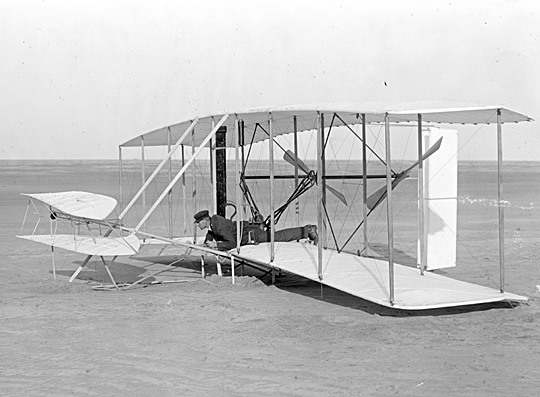
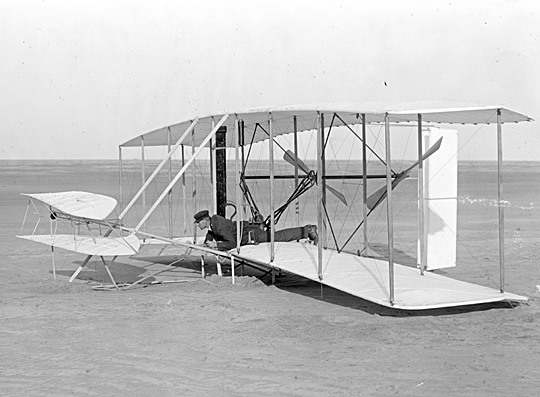

The Wright Brothers:
Inspired by the Creator

A Thoughtful Father
Eleven-year-old Wilbur and seven-year-old Orville waited eagerly for their father to come home from
his business trip.
The year was 1878 and the reason for the brothers’ excitement was that their father always brought
home presents.
This time was no exception. When he dismounted his horse and reached in his saddlebag, he brought
out a strangelooking toy.
It was about a foot tall and had a shaft through it with a propeller on the top. Toward the bottom
was a rubber band to power the propeller. Father instructed the attentive boys to watch closely as
he wound The Wright Brothers: Inspired by the Creator up the propeller with his finger tightening up
the rubber band. As he released the propeller, it rose eight feet in the air.
The brothers were shocked; they had never seen anything like it before. Wilbur and Orville thanked
their father, but after three days of constant use, the toy broke.
“Let’s build one ourselves,” exclaimed Wilbur.
“Sounds great,” agreed Orville, “How do we do it?”
“Well,” Wilbur said thoughtfully, “We will have to make it twice as big.”
After several days of work, they were able
to build a duplicate toy twice as big.
 
